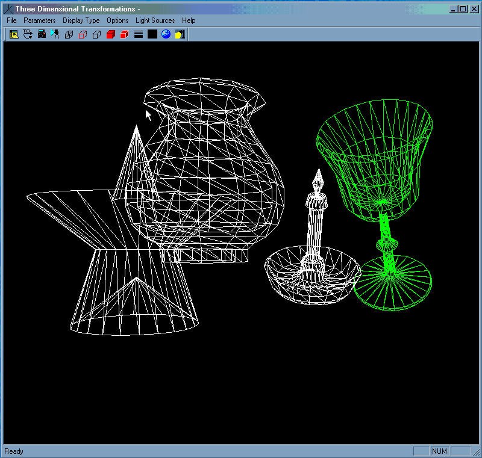

Three Dimensional Transformations README
Three Dimensional Transformations Program
by Greg Buron
README file
This first picture is of four models positioned in the render area in simple wireframe
mode. The Objects with the green lines is the "current object" which the user can modify
with the transformations palette.

Figure 1: Models with wire frame rendering.
Using the depth cue rendering technique, the models are still in wire frame mode, but the colors of
the wire frame are modified according to the distance from the observer, giving the wire frame model more
of a concept of "depth".
Figure 2: Models with wire frame rendering with depth cue coloration. Depth cueing also
uses backface elimination.
Models rendered with backface elimination hides facets that the user cannot see by not drawing them.

Figure 3: Models with wire frame rendering with backface elimination.
The painter's algorithm draws solid facets of the object, and colors them with light equations that
are set up in the light parameters dialog box. Here this picture shows the objects in Painter's drawing mode.
The colors of the facets here are somewhat distorted because this file is of .gif format.
Figure 4: Models rendered with the Painter's algorithm. This also uses backface elimination.
Figure 5: Painter's algorithm with traced facets.
Figure 6: Models rendered with the Painter's algorithm. Overlapping objects cause some interference.